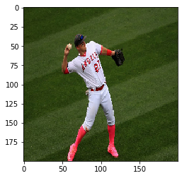
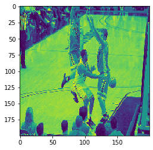
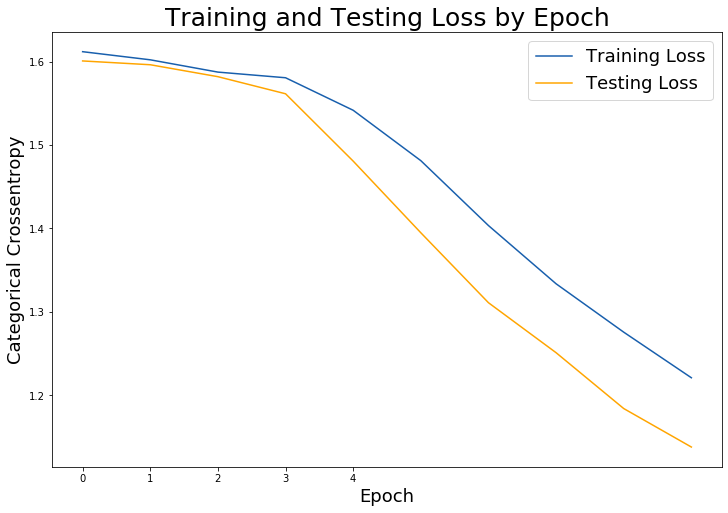

Building an Image Classification Model
Using Deep Learning theres a vast amount of amazing things we can acheive. One of them being creating a model to classify images.
Using CNN (convolutional neural networks) we can analyze images and train models to understand and classify those images.
In this post I am going to go over the steps I took to create an Image classifying model which I did for a personal project.
(I will try to break down the steps and keep it simple as possible so anyone following along can keep up.)
Step 1: Choosing your data source
Theres many datasets that you can download off the internet to follow along with this tutorial. One of the most famous ones being the MNIST-Fashion
For my own personal project I decided to create a model that classifed sports images. I wanted to be able to classify images across "Baseball, Basketball, Football, Hockey, and Soccer". To do this I web-scraped images off of Google and created my own data set.
If you are interested in following this route theres a very handy Python Package that you can use that will allow you to download your images very easily called the Google Images Downloader
Step 2: Get the Data
Like I mentioned in the first step I chose to web-scrape my own images to use to train my model.
If you have gone ahead and installed the "Google Images Downloader" package then your code should look something like this:
(before going any further I would suggest creating a folder where you can store all the work we're going to be doing)
from google_images_download import google_images_download
response = google_images_download.googleimagesdownload()
arguments = {"keywords":"Baseball","Basketball","Hockey","Football","Soccer" #creating list of arguments
"limit":1500, #Specify # of images to download per argument
"format":"png", #Specify file type (optional)
"size": "medium" #size of file (optional)
"print_urls":True, #print file url (optional)
"chromedriver":"C:\\Users\\v_sha\\OneDrive\\Desktop\\chromedriver_win32 (1)\\chromedriver.exe"}
paths = response.download(arguments) #passing the arguments to the function
print(paths) #printing absolute paths of the downloaded images
("chromedriver" is needed to scroll through Google for images because only a certain amount are shown at once. More information can be found on the Google Images Downloader documentation page)
Running this code allowed me to download approximately 1500 images for each of my arguments (Baseball, Basketball, Hockey, Football and Soccer). I say approximately because some images can be corrupted and wont be downloaded.
The images should all be stored in a folder called downloads and there should be sub-folders for each argument(sport).
Once again, I chose to classify sports images for my own personal project, you can use what ever you like to follow along.
Step 3: Load in Data(images)
Import Libraries
import numpy as np
import pandas as pd
import matplotlib.pyplot as plt
import os
import glob
from PIL import Image
from sklearn.model_selection import train_test_split
from sklearn.preprocessing import LabelBinarizer
from sklearn.metrics import confusion_matrix
from tensorflow.keras.models import Sequential
from tensorflow.keras.layers import Dense, Dropout, Activation, Flatten, Input
from tensorflow.keras.layers import Conv2D, MaxPooling2D
from tensorflow.keras.utils import to_categorical
import warnings
warnings.filterwarnings('error', 'WARNING')
%matplotlib inline
Retrieve and list out Image folders in downloads
folder_names = [name for name in os.listdir("./downloads")]
folder_names
['Baseball', 'Basketball', 'Football', 'Hockey', 'Soccer']
Create X and y variables for training and test images/Load images
X = []
y = []
for folder in folder_names:
files = glob.glob("downloads/" + folder + "/*")
for file in files:
img = Image.open(file)
img = img.resize((200,200))
img = np.asarray(img)
img = np.array(img, dtype = "float32")
img /= 255
if img.shape == (200,200,3):
X.append(img)
label = folder.split("_")[0]
y.append(label)
C:\Users\v_sha\AppData\Local\Programs\Python\Python37\lib\site-packages\PIL\TiffImagePlugin.py:804: UserWarning: Corrupt EXIF data. Expecting to read 4 bytes but only got 0.
warnings.warn(str(msg))
Convert Data into Array and Inspect Shape
X = np.array(X)
y = np.array(y)
X.shape
(3329, 200, 200, 3)
Inspect Image
plt.imshow(X[0])
<matplotlib.image.AxesImage at 0x1ab070d0a48>

Now that we have loaded in our images and created our Test and Train set we can start prepping the data for the model
Train-Test-Split:
X_train, X_test, y_train, y_test = train_test_split(X, y)
Create Label (classes) for Images:
labels = {
0: "Baseball",
1: "Basketball",
2: "Football",
3: "Hockey",
4: "Soccer"
}
y_train[0:5]
array(['Basketball', 'Hockey', 'Football', 'Soccer', 'Football'],
dtype='<U10')
I now have 5 classes representing the 5 different sports images I am aiming to classify.
LabelBinarize() and Transform Data:
lb = LabelBinarizer()
y_train = lb.fit_transform(y_train)
y_test = lb.transform(y_test)
lb.inverse_transform(y_train[[0]])
array(['Basketball'], dtype='<U10')
plt.imshow(X_train[0][:, :, 0])
<matplotlib.image.AxesImage at 0x1ab07150288>

As you can see, once we apply LabelBinarizer and Transform our data the images look different
Now for the good stuff! Time start creating our Model:
Instantiate and Create Model
#Instantiate Model
cnn_model = Sequential()
# Add a convolutional layer
cnn_model.add(Conv2D(filters = 6,
kernel_size = 3,
activation = "relu",
input_shape=(200,200,3)))
# Add a pooling layer
cnn_model.add(MaxPooling2D(pool_size = (3,3)))
# Add a second convolutional layer
cnn_model.add(Conv2D(kernel_size = 3,
filters = 16,
activation = "relu"))
# Add a second pooling layer
cnn_model.add(MaxPooling2D(pool_size = (3,3)))
# Add a third convolutional layer
cnn_model.add(Conv2D(kernel_size = 3,
filters = 26,
activation = "relu"))
# Add a third pooling layer
cnn_model.add(MaxPooling2D(pool_size = (3,3)))
# Flatten the 3D array to 1D array
cnn_model.add(Flatten())
# Add in first perceptrons
cnn_model.add(Dense(128, activation = "relu"))
# Add in a Dropout
cnn_model.add(Dropout(0.5))
# Add in second perceptrons
cnn_model.add(Dense(64, activation = "relu"))
# Add in a second Dropout
cnn_model.add(Dropout(0.5))
# Output
cnn_model.add(Dense(len(lb.classes_), activation = "softmax"))
cnn_model.summary()
Model: "sequential_2"
_________________________________________________________________
Layer (type) Output Shape Param #
=================================================================
conv2d_6 (Conv2D) (None, 198, 198, 6) 168
_________________________________________________________________
max_pooling2d_6 (MaxPooling2 (None, 66, 66, 6) 0
_________________________________________________________________
conv2d_7 (Conv2D) (None, 64, 64, 16) 880
_________________________________________________________________
max_pooling2d_7 (MaxPooling2 (None, 21, 21, 16) 0
_________________________________________________________________
conv2d_8 (Conv2D) (None, 19, 19, 26) 3770
_________________________________________________________________
max_pooling2d_8 (MaxPooling2 (None, 6, 6, 26) 0
_________________________________________________________________
flatten_2 (Flatten) (None, 936) 0
_________________________________________________________________
dense_6 (Dense) (None, 128) 119936
_________________________________________________________________
dropout_4 (Dropout) (None, 128) 0
_________________________________________________________________
dense_7 (Dense) (None, 64) 8256
_________________________________________________________________
dropout_5 (Dropout) (None, 64) 0
_________________________________________________________________
dense_8 (Dense) (None, 5) 325
=================================================================
Total params: 133,335
Trainable params: 133,335
Non-trainable params: 0
_________________________________________________________________
cnn_model.compile(loss='categorical_crossentropy',
optimizer = 'adam',
metrics=['accuracy'])
history = cnn_model.fit(X_train,
y_train,
batch_size=256,
validation_data = (X_test, y_test),
epochs = 10,
verbose =1)
Train on 2496 samples, validate on 833 samples
Epoch 1/10
2496/2496 [==============================] - 31s 12ms/sample - loss: 1.6120 - acc: 0.2115 - val_loss: 1.6009 - val_acc: 0.2605
Epoch 2/10
2496/2496 [==============================] - 29s 12ms/sample - loss: 1.6022 - acc: 0.2268 - val_loss: 1.5963 - val_acc: 0.2521
Epoch 3/10
2496/2496 [==============================] - 29s 12ms/sample - loss: 1.5875 - acc: 0.2588 - val_loss: 1.5820 - val_acc: 0.3073
Epoch 4/10
2496/2496 [==============================] - 29s 12ms/sample - loss: 1.5807 - acc: 0.2628 - val_loss: 1.5615 - val_acc: 0.3205
Epoch 5/10
2496/2496 [==============================] - 29s 12ms/sample - loss: 1.5417 - acc: 0.3037 - val_loss: 1.4808 - val_acc: 0.3950
Epoch 6/10
2496/2496 [==============================] - 29s 12ms/sample - loss: 1.4813 - acc: 0.3409 - val_loss: 1.3949 - val_acc: 0.4550
Epoch 7/10
2496/2496 [==============================] - 29s 12ms/sample - loss: 1.4035 - acc: 0.3870 - val_loss: 1.3110 - val_acc: 0.4754
Epoch 8/10
2496/2496 [==============================] - 29s 12ms/sample - loss: 1.3337 - acc: 0.4403 - val_loss: 1.2511 - val_acc: 0.5414
Epoch 9/10
2496/2496 [==============================] - 29s 12ms/sample - loss: 1.2757 - acc: 0.4692 - val_loss: 1.1841 - val_acc: 0.5582
Epoch 10/10
2496/2496 [==============================] - 29s 12ms/sample - loss: 1.2210 - acc: 0.4980 - val_loss: 1.1380 - val_acc: 0.6014
So we have just created a model that has an accuracy of roughly 60%.
Not the greatest model but since we predicting over 5 classes (20% each) this actually isn't a horrible score.
(The purpose of this blog is to help you understand how to create model's for image classification. You can go ahead and do further readings and research to better understand how to create better model's based on tuning certain parameters.)
Plot Results
#Plot Training and Testing Loss:
# Check out our train loss and test loss over epochs.
train_loss = history.history['loss']
test_loss = history.history['val_loss']
# Set figure size.
plt.figure(figsize=(12, 8))
# Generate line plot of training, testing loss over epochs.
plt.plot(train_loss, label='Training Loss', color='#185fad')
plt.plot(test_loss, label='Testing Loss', color='orange')
# Set title
plt.title('Training and Testing Loss by Epoch', fontsize = 25)
plt.xlabel('Epoch', fontsize = 18)
plt.ylabel('Categorical Crossentropy', fontsize = 18)
plt.xticks([0, 1, 2, 3, 4])
plt.legend(fontsize = 18);

Check Final Model Score
cnn_score = cnn_model.evaluate(X_test, y_test, verbose=1)
cnn_labels = cnn_model.metrics_names
833/833 [==============================] - 4s 5ms/sample - loss: 1.1380 - acc: 0.6014
print(f'CNN {cnn_labels[0]} : {cnn_score[0]}')
print(f'CNN {cnn_labels[1]} : {cnn_score[1]}')
print()
CNN loss : 1.1379965717623644
CNN acc : 0.6014405488967896
Test Model:
np.set_printoptions(suppress = True)
cnn_model.predict(np.array([X_test[0]]))
array([[0.14482361, 0.04204996, 0.27279547, 0.00418275, 0.5361482 ]],
dtype=float32)
If you remember from before when we made our classes our set up was :
0 - Baseball
1 - Basketball
2 - Football
3 - Hockey
4 - Soccer
Based on the given array output up top
array([[0.14482361, 0.04204996, 0.27279547, 0.00418275, 0.5361482 ]]
Image in (X_test[0]) is predicted to be 53% soccer which is the highest across all classes
y_pred_train = [np.argmax(i) for i in (cnn_model.predict(X_train))]
label = {i:name for i, name in enumerate(lb.classes_)}
y_pred_train = [label[i] for i in y_pred_train]
y
array(['Baseball', 'Baseball', 'Baseball', ..., 'Soccer', 'Soccer',
'Soccer'], dtype='<U10')
lb.classes_
array(['Baseball', 'Basketball', 'Football', 'Hockey', 'Soccer'],
dtype='<U10')
Inspect Predictions Using Confusion Matrix
con_matrix = confusion_matrix(lb.inverse_transform(y_train), y_pred_train)
pd.DataFrame(con_matrix, columns = lb.classes_, index = lb.classes_)
| Baseball | Basketball | Football | Hockey | Soccer | |
|---|---|---|---|---|---|
| Baseball | 350 | 13 | 89 | 29 | 123 |
| Basketball | 52 | 136 | 144 | 58 | 64 |
| Football | 48 | 20 | 368 | 23 | 101 |
| Hockey | 12 | 17 | 60 | 335 | 0 |
| Soccer | 54 | 15 | 60 | 5 | 320 |
check = pd.DataFrame({"y_true": lb.inverse_transform(y_train), "y_pred" : y_pred_train})
check.head(10)
| y_true | y_pred | |
|---|---|---|
| 0 | Basketball | Baseball |
| 1 | Hockey | Hockey |
| 2 | Football | Soccer |
| 3 | Soccer | Soccer |
| 4 | Football | Football |
| 5 | Baseball | Baseball |
| 6 | Basketball | Football |
| 7 | Basketball | Hockey |
| 8 | Basketball | Basketball |
| 9 | Hockey | Hockey |
Here you can see the first 10 images I have. The very first one is suppose to be a "Basketball" image but the model has predicted it to be "Baseball" which is unfortunate but once again the purpose of this blog is to help you understand the steps in creating a Image Classification Model.
Well there you go folks. We have successfully created an Image Classification Model. Hopefully this was simple enough for you to follow along. Thanks for reading!